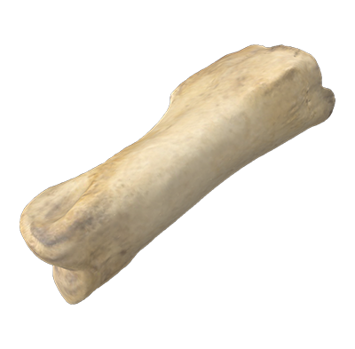
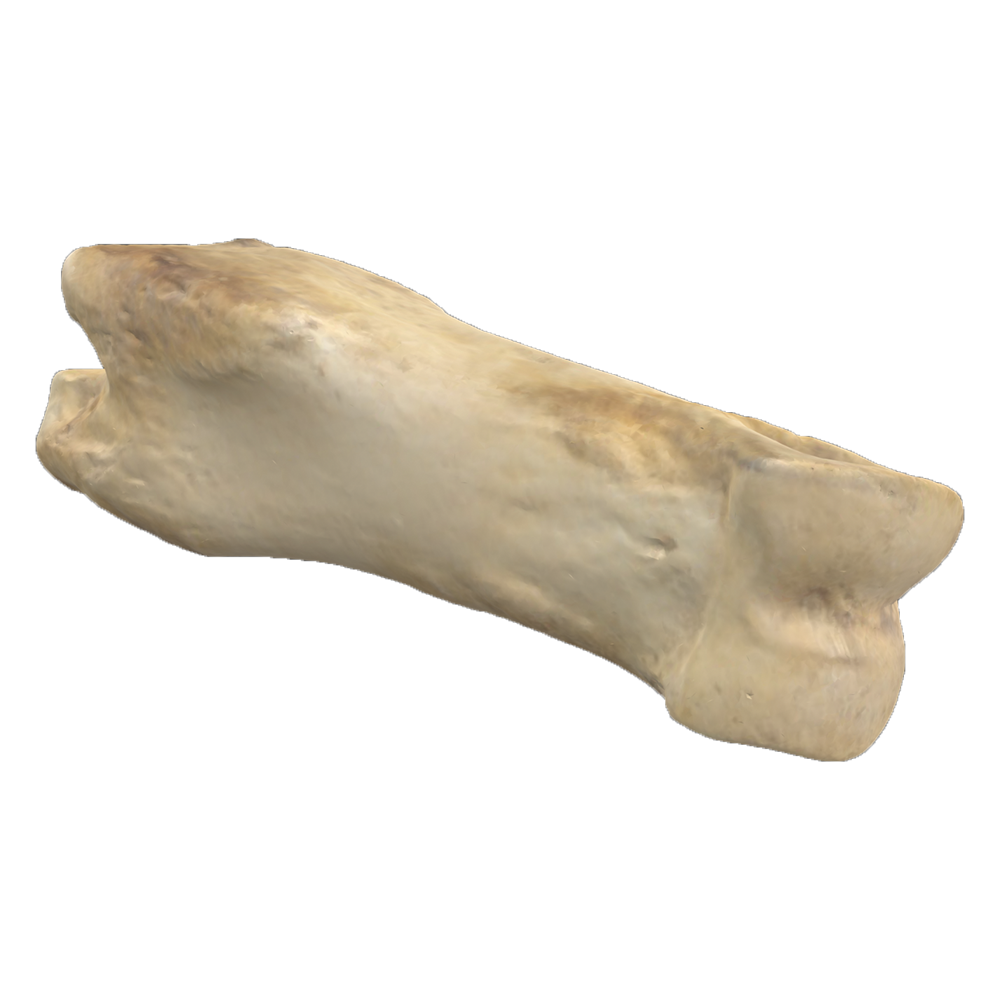

Logo

Artifact Featured Content
Artifact Introduction
Phalange Bone
1-2in

Material: Deer Bone
Artifact Origin Story
Hanging Decorations
Modified deer phalange bones are a common artifact recovered from the Lawson site. Once processed, the bones are mostly hollow, but holes were drilled through the top to allow for stringing and hanging.Archaeologists believe a phalange like this might have been used as a toggle or hanging bead on clothing.
Artifact Feature Content
Fun and games

Phalange bones found at later sites show clear contextual evidence of being the cup half of a cup-and-pin game, and Lawson site inhabitants may have used them the same way.